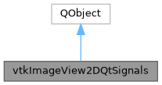

|
MUSICardio 4.2
MUSICardio application created by Inria Epione, IHU LIRYC and Université de Bordeaux
|
Loading...
Searching...
No Matches
|
MUSICardio 4.2
MUSICardio application created by Inria Epione, IHU LIRYC and Université de Bordeaux
|
#include <vtkImageView2D.h>


Signals | |
| void | interpolate (bool, int) |
| void | sliceChanged (int, int) |
Public Member Functions | |
| void | emitInterpolate (bool pi_bInterpolation, int pi_iLayer) |
| void | emitSliceChanged (int slice, int sliceOrientation) |
Notes on Nicolas Toussaint changes
A) SLICE_ORIENTATION enum the slice orientation enum has changed to match VTK: XY / XZ / YZ The axis enum is therefore of no need.
B) The ImageToColor instance has been moved to ImageView (see vtkImageView.h)
C) Orientation and Convention systems have been put in place, thus replacing the DirectionMatrix system
D) The Zoom / Pan differentiation: is it needed ?
E) again here Visibility --> Show
F) The command / style and events. Well, I put A LOT of time and efforts in optimizing the ImageView2DCommand so that it fully match VTK requirements, simplifying a lot the readability and clearness of the overall code. So I put it back. One thing remains though. Pierre differentiated the Zoom event from the Pan event, thus authorizing sync. of one and not the other. In the system I propose there is no differentiation, they are gathered in the CameraMove event. To be discussed.
G) All mouse interactions have thus been put in place.
H) The UpdateOrientation() and PostUpdateOrientation() have been re-installed, as well as the SetAnnotationsFromOrientation(), adding the cool ImageViewCornerAnnotation instance from Pierre.
I) SetSlice() now handles the CurrentPoint change, so that this instance is always up to date.
J) still some work to do on the annotations